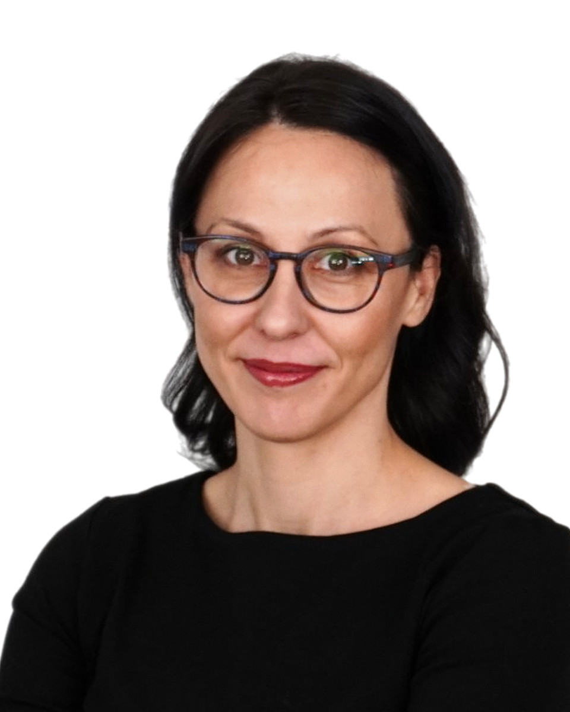

Odlučivanje
Odluke svih nivoa čekaju odobrenje jedne osobe.
Pomažemo kompanijama u Srbiji i regionu da postave jasne nadležnosti, ubrzaju odlučivanje i upravljaju na osnovu pokazatelja, a ne na osnovu toga ko je tog dana prisutan.
Pet pitanja. Odgovorite iz ugla osobe kod koje se odluke najčešće zaustavljaju.
Orijentaciona procena na osnovu pet pokazatelja. Obračun: 230 radnih dana godišnje, radni dan od 8 sati.
Simptomi koje vidimo i u domaćim kompanijama i u pogonima međunarodnih grupa.
Odluke svih nivoa čekaju odobrenje jedne osobe.
Uloge se preklapaju, a za rezultat ne odgovara niko konkretno.
Rukovodioci rade umesto svojih timova.
Uska grla se vide tek kada naprave trošak.
Izveštaji se rade ručno, kasne i svako ima svoj broj.
Operativa troši vreme, a strategija se odlaže.
Pet oblasti u kojima radimo, pojedinačno ili kao celina. Organizacija radi samostalno tek kada su uloge jasne, odluke na pravom nivou, rukovodioci spremni, brojevi pouzdani, a uslovi rada bezbedni.
Organizacija postavljena prema stvarnom načinu rada.
Zato ostajemo uz menadžment dok novi način rada ne postane standard.
Odlučivanje, odgovornosti, procesi i podaci.
Uloge, nadležnosti i redosled delegiranja.
Rad sa rukovodiocima na stvarnim odlukama.
Sistem radi samostalno, uz našu podršku po potrebi.
Većina klijenata počinje dijagnostikom. Posle nje plan možete sprovesti i samostalno.
Jasna slika pre odluke o daljem radu.
Za kompanije koje žele promenu koja traje.
Stalna podrška u pitanjima organizacije i ljudi.
Radili smo zajedno u automobilskoj industriji. Danas zajedno radimo na ljudima i organizaciji poslovanja, i na pokazateljima na osnovu kojih se njima upravlja.
Nikola je više od 15 godina gradio organizacije iznutra: od razvoja ljudi i obuke, preko radnih odnosa, do uloge direktora ljudskih resursa i rukovođenja proizvodnom kompanijom. Radio je u Srbiji i Italiji, sa odgovornošću na nivou Evrope i Afrike, i vodio funkciju ljudskih resursa izvozne kompanije sa kupcima u više od 80 zemalja.
Kao konsultant radio je sa kompanijama iz preko 10 industrija, u Srbiji, Bosni i Hercegovini, Hrvatskoj i Sloveniji. Najčešće u firmama koje su porasle brže od svoje organizacije, gde je direktor ili ključni rukovodilac postao usko grlo, a rukovodioci nisu imali jasna pravila po kojima mogu da odlučuju.
U okviru Vivara Nikola vodi rad na organizaciji, nadležnostima i razvoju rukovodilaca: postavlja jasne uloge i pravila odlučivanja, radi sa rukovodiocima na terenu i podržava menadžment u odlukama o ljudima i organizaciji.

Zorana ima više od 18 godina iskustva u unapređenju poslovanja i upravljanju kvalitetom, pretežno u automobilskoj industriji. Iskustvo je gradila u vodećim međunarodnim korporacijama, kroz razvoj strategije kvaliteta, jačanje sposobnosti organizacije za sistematsko rešavanje problema, unapređenje poslovnih procesa i digitalnu transformaciju.
Kombinuje analitički pristup, strukturisano razmišljanje i sposobnost sagledavanja šire slike, kako bi pomogla menadžmentu da prepozna ključne izazove, preispita postojeće pretpostavke i pronađe održiva rešenja. Posebno iskustvo ima u metodama rešavanja problema i koučingu timova.
U okviru Vivara Zorana podržava rukovodioce i timove u rešavanju složenih poslovnih i organizacionih izazova i unapređenju poslovnih performansi. Njen pristup povezuje podatke, ljude i procese, kako bi se unapredili kvalitet odlučivanja, odgovornost timova i sposobnost organizacije da samostalno rešava probleme.
Uvodni razgovor od 30 minuta, bez obaveze. Kažemo vam gde vidimo najveći potencijal i odakle bismo počeli.
Popunjavanje traje manje od minuta.
Otvoren je vaš email program sa popunjenom porukom, ostaje samo da je pošaljete. Ako se ništa nije otvorilo, pišite direktno na office@vivarogroup.rs ili pozovite 064 400 12 55.
Dijagnostika traje dve do četiri nedelje, a program razvoja šest do dvanaest meseci. Posle toga saradnja se može nastaviti u manjem obimu.
Dijagnostika ima fiksnu cenu poznatu unapred. Program i partnerstvo ugovaraju se kao mesečni paušal, bez satnice i naknadnih troškova.
Odluke se prenose postepeno, uz jasne granice i praćenje kroz pokazatelje. Svaki sledeći korak sledi tek kada prethodni pokaže rezultat.
Ne isporučujemo dokument, već promenu u svakodnevnom radu. Projekat je uspešan tek kada ga vaši rukovodioci vode samostalno.
Najčešće nije. Radimo sa podacima i alatima koje kompanija već koristi, a njihovo uređenje je deo posla.
Ugovor o poverljivosti potpisujemo pre prvog uvida u podatke. Podaci ostaju u vašim sistemima kad god je to moguće.
Ne. Poslove za koje je propisana licenca, kao što su poslovi lica za bezbednost i zdravlje na radu, izrada akta o proceni rizika, pregledi opreme i zakonski obavezna obuka zaposlenih, obavljaju naši licencirani partneri. Mi pripremamo kompaniju da obaveze budu ispunjene u praksi i da se stanje održava.